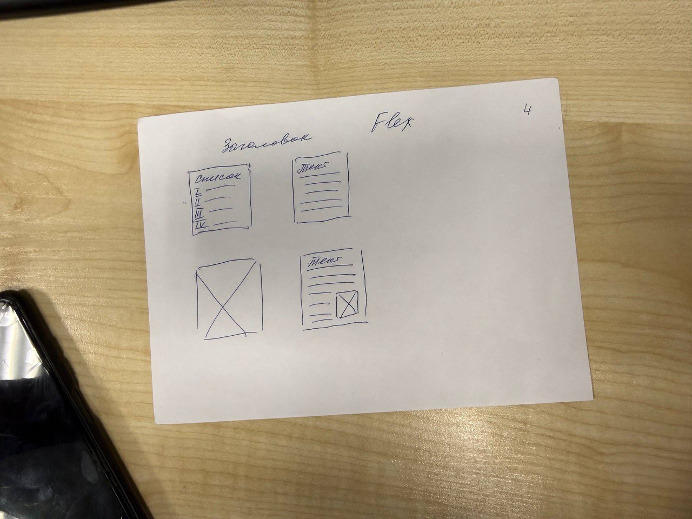

Уходил на левый борт, так как судно ветром несло вправо. От буев мы проходили на расстоянии около 30 метров. А еще были встречные суда, приходилось с ними расходиться на очень малых дистанциях. Но и это еще не все. Пока мы шли по реке до причала, уже стемнело и была непроглядная ночь, лоцман оринтировался по мигающим огонькам на буях. Но, вот уже видно город (большая деревня) и впереди замаячил мост, не доходя до которого мы должны были пришвартоваться к нашему причалу. И тут началось самое интересное, лично у меня это с трудом уложилось в голове: швартовка в мелкой реке, в развороте (судно во время швартовки разворачивается на 180 градусов чтобы сразу развернуться носом на выход), ночью, без буксиров! Но, все прошло идеально, к причалу подошли очень мягко, можно сказать ювелирно. Лоцман молодец, настоящий профессионал

Да, недалеко от причала находится затонувшее судно времен войны, которое и на судно-то не похоже, так вот оно тоже немного осложняет швартовку. В общем пока подходили к причалу, все кто был на мостике периодически стряхивали пот со лба. Потом механики сказали что машина набрала много грязи со дна, чудом не заглохли, а это был бы полный финиш. Про сам город писать особо нечего, так как в город я не ходил, сил хватало после вахты дойти до каюты и моментально выключиться. Немного грязно, но не критично. Народ дружелюбный, почти все черные как ночь, правда за ними нужно было постоянно бегать и следить - иначе разломают весь пароход, и то, на полубаке они нам нашем же краном леера свернули в бараний рог, а когда грузили контейнеры на левый борт, они там в кране видимо что-то перепутали и мимо меня пронесся контейнер снося все на своем пути - оторвали кусок ппрожектора палубного освещения, побили леера, съездили по кранхаусу, на котором я в тот момент находился (строение на котором находится судовой грузовой кран), потом контейнер полетел обратно и